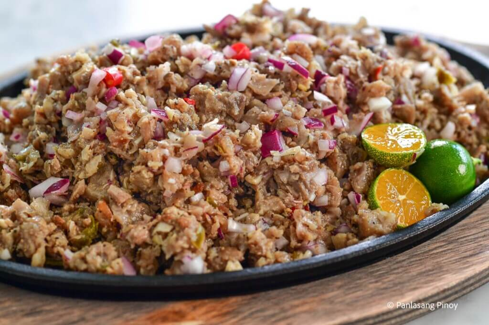
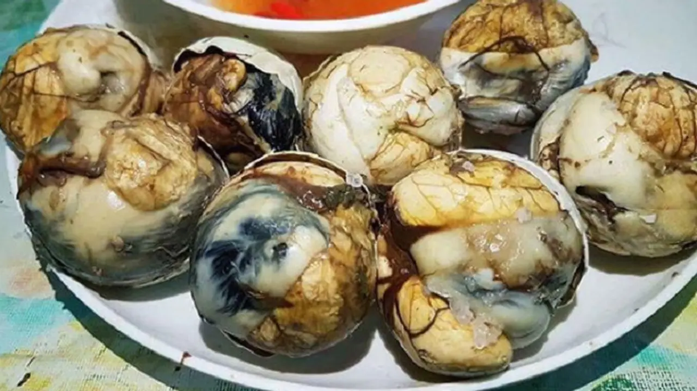
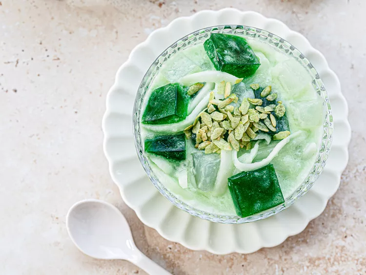
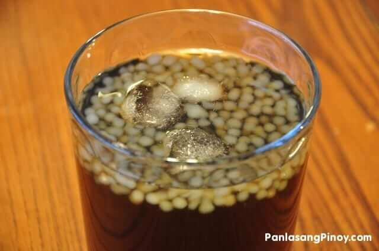

Delicious Filipino Recipes
Chicken Adobo

Ingredients
- 2 lbs chicken, cut into pieces
- 1 cup soy sauce
- 1 cup vinegar
- 1 head garlic, minced
- 2 bay leaves
- 1 tsp black peppercorns
- 2 tbsp cooking oil
- Salt to taste
Instructions
- In a bowl, combine chicken, soy sauce, garlic, bay leaves, and peppercorns. Marinate for at least 30 minutes.
- Heat oil in a pot over medium heat. Add the marinated chicken and cook until browned.
- Add vinegar and let it boil without stirring for about 5 minutes.
- Add water and simmer until chicken is tender.
- Season with salt to taste and serve with rice.
Halo-Halo
Ingredients
- 1 cup shaved ice
- 1/2 cup sweetened beans (red or mung beans)
- 1/2 cup sweetened fruits (like jackfruit and banana)
- 1/4 cup leche flan (caramel custard)
- 1/4 cup ube (purple yam) ice cream
- Evaporated milk to taste
- Optional: toasted rice flakes for topping
Instructions
- In a tall glass, layer the sweetened beans and fruits at the bottom.
- Add shaved ice on top of the layers.
- Pour evaporated milk over the ice.
- Add leche flan and top with ube ice cream.
- Sprinkle with toasted rice flakes if desired, and serve immediately.
Pork Sisig

Ingredients
- 1 lb pork belly, boiled and chopped
- 1 onion, chopped
- 2-3 green chilies, chopped
- 1/4 cup mayonnaise
- 1 tbsp soy sauce
- Juice of 1 lemon
- Salt and pepper to taste
Instructions
- In a pan, sauté onions and green chilies until fragrant.
- Add the chopped pork belly and cook until crispy.
- Mix in mayonnaise, soy sauce, and lemon juice.
- Season with salt and pepper to taste.
- Serve hot on a sizzling plate.
Balut

Ingredients
- Fertilized duck egg
- Salt to taste
- Vinegar (optional)
Instructions
- Boil the fertilized duck egg for about 30 minutes.
- Let it cool slightly before peeling.
- Sprinkle with salt and vinegar before eating.
Buko Pandan

Ingredients
- 2 cups young coconut, shredded
- 1 cup pandan-flavored jelly, cubed
- 1 cup sweetened condensed milk
- 1 cup coconut milk
- 1/2 cup sugar (optional)
Instructions
- In a bowl, combine shredded coconut and pandan jelly.
- Add sweetened condensed milk and coconut milk.
- Mix well and adjust sweetness with sugar if desired.
- Chill in the refrigerator before serving.
Sago't Gulaman

Ingredients
- 1 cup sago pearls
- 1 cup gulaman (agar-agar), cubed
- 4 cups water
- 1 cup sugar
- 1 cup coconut milk
Instructions
- Boil sago pearls in water until translucent, then drain.
- In a separate pot, dissolve sugar in water and add gulaman. Boil until set.
- Cut gulaman into cubes and mix with sago pearls.
- Serve with coconut milk poured over the mixture.